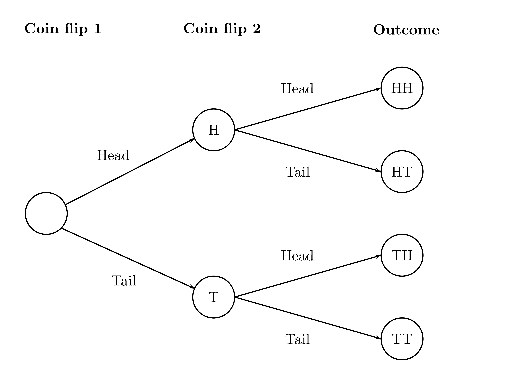
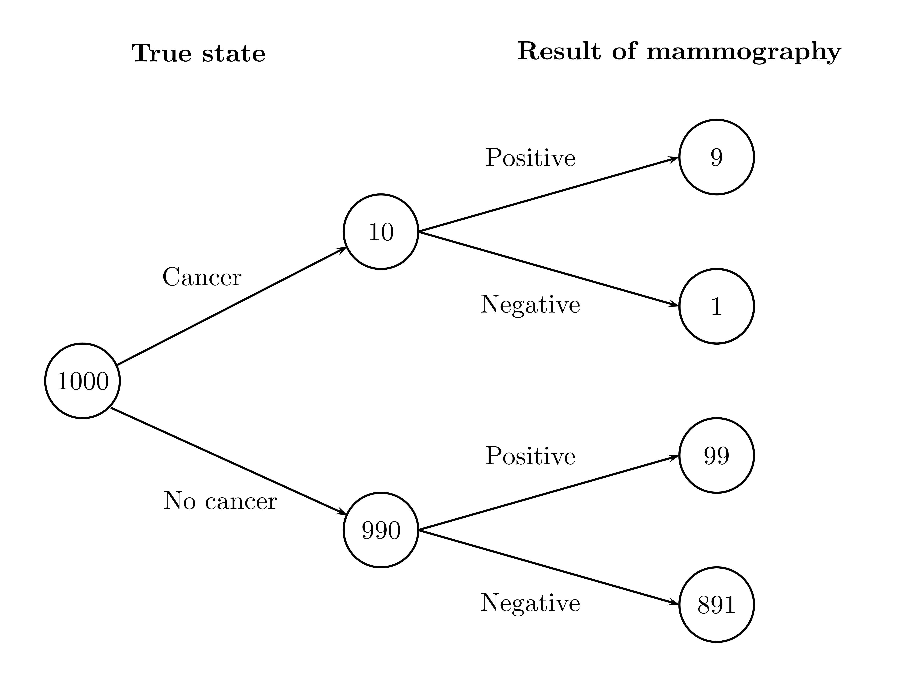
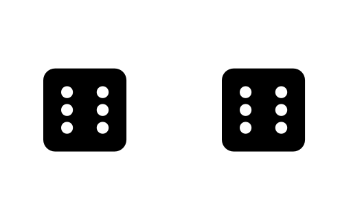
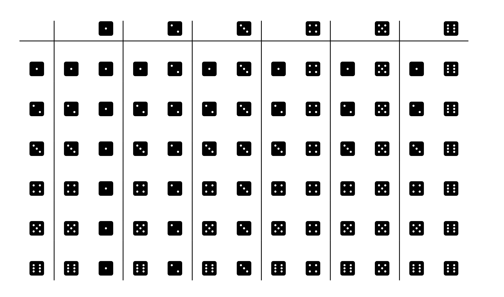
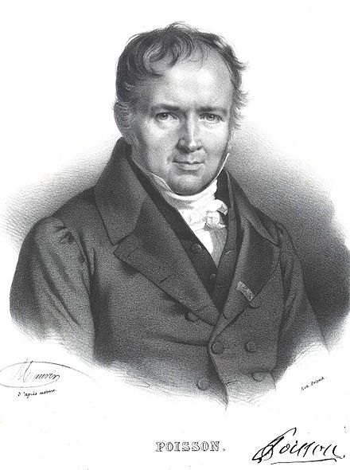
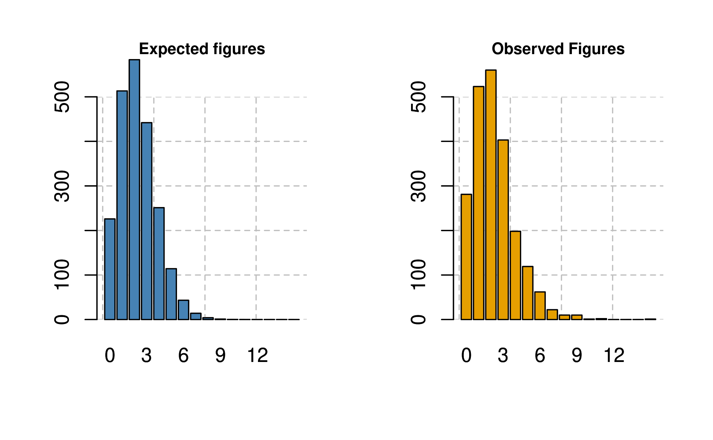

flip_coin_twice <- function(){
coin <- c("H", "T")
sample(coin, size = 2, replace = T)
}9 Probability: Quantifying uncertainty and variabilility
If you chose to study statistics and data analysis it comes natural at some stage, to also study probability. We already encountered some probability ideas in this course, although we did not treat them in any depth.
The first encounter was in unit 3 where we discussed the idea of random sampling from a population and learned how the simple fact that every individual or unit in the population has the same chance of ending up in the sample, if repeated long enough under similar conditions, such a sampling process leads to a good approximation of the variability in the population. The sample, in a way, gets a similar distributional shape as the population. Moreover, in the last unit, unit 5, by studying the bootstrap, we learned about the idea of quantifying how much variation in a summary statistics or in a prediction we would expect if we repeated the sampling many times and use the variability in the samples to express our uncertainty about the underlying characteristics in the population.
If we want to go on in statistics and its main idea from here we have to learn some probability theory. So let’s face this challenge right on. Many courses in statistics traditionally start with probability right away. We chose a different route here, following the insights of the great statistician Spiegelhalter (2019) whose route of exposition of the subject we follow in our course.
Overview
In this unit you will learn about the probability theory. Probability theory is a mathematical framework to analyze and better understand situations of uncertainty.
While probability is a mathematical theory it gets practical value and intuitive meaning in connection with real or conceptual experiments, such as flipping a coin or throwing a dice.
Chance or probability can be thought of as the percentage of times something is going to happen when the basic process or experiment is done over and over again, independently under idetical conditions.
Probability theory describes probability by rules that probability has to obey to me a meaningful and useful theory of uncertainty.
Probability and Statistics are connected. In some situations the statistician is confronted with data that were gernerated by a random device, such as in a randomized controlled experiment, where individuals are randomly assigened to treatment and control group.
Often statisticians encounter also situations where data have been chosen by a random mechnism and this mechanism can be desribed and is kown to the statistician such as in surveys, that build on random samples.
Surprisingly, even if we know all the data, such as data from a register, and there are no knon random devices or random mechnisms involved, it can still be useful to conceptually thing about the variability in the data in terms of a probability distribution.
Keywords
Chance or probability: An intuitive understanding of what chance is is perhaps easiest if we think about chance as the percentage of times something happens, when the basic process is repeated many times independently and under the same conditions.
Probabilities are between 0 and 1: Probabilities of things that could happen or events are numbers between 0 and 1, with 0 for impossible events and 1 for sure events.
Complement rule: The probability of something - an event - equals 1 minus the probability of the thing - the event - not happening, i.e. the opposite thing.
Multiplication rule: Probability rule 3: The probability that two things will both occur equals the chance that the first will happen multiplied by the chance that the second will happen given the first has happened.
Independence: Two events are independent if the chances or the second given the first are the same no matter how the first one turns out. Otherwise two things are dependent.
Multiplication rule for independent events: If two events are independent, the chance that both will happen equals the product of their unconditional probabilities. This is a special case of the multiplication rule.
Addition rule: To find the chance that at least one of two things will happen check to see if they are mutually exclusive. If they are the chances can be added up.
Probability is first of all a mathematical theory. It gets practical value and intuitive meaning in connection with real or conceptual experiments. Indeed these fascinating interconnections are already visible in the very beginning of probability, which emerged in the 16th and 17th century in Europe in the context of practical as well as scholarly discussions about gambling. The analysis of games of chance are at the beginning of probability theory as a field of scientifc analysis. These discussions engaged the greatest minds of their times, with names like Gerolamo Cardano (1501-1576), Galileo Galilei (1564 - 1642), Blaise Pascal (1623-1662), Pierre Fermat (1601 - 1665), Christiaan Huyghens (1629 - 1695), Jacob Bernoulli (1654 - 1705), Abraham de Moivre (1667 - 1754), Thomas Bayes (1701 - 1761) and Pierre Simon de Laplace (1749 - 1825).
While people were aware of chance at all times, liked to gamble or even had a godess of chance like the Greeks, it seems only later it occurred to them that something as elusive as uncertainty or chance could perhaps be measured. This is the starting point for classical probability.
While probability is of immense practical value for dealing with uncertainty, many people find probability unintuitive and difficult. Don’t despair. This is very natural, since the human mind is not geard towards probabilistic thinking. Probability is indeed not something that comes to us naturally. It is a way of thinking that has to be learned and acquired through practice and training. With patience and endurance you also will master the basic rules of probability. With this additional skill you will grow in your competence as a statistician and data analyst.
9.1 What are the chances?
We talk loosely about chance all of the time. This is ok and it does no harm but for doing statistics and engaging in the science of quantifying uncertainty we need to give the term chance a definite and clear interpretation. This turns out to be hard. All the great minds referred to above, had struggled with this task.
As an intuitive guide, you might follow the idea to think of probability in terms of expected frequency. You ask yourself, what would happen, if I repeated this experiment a number of times. So for the purpose of this exposition let us think of chance in the following way:
Chance
The chance of something gives the percentage of time it is expected to happen, when the basic process is done over and over again, independently and under the same conditions.
Especially with the modern tool of the computer, we have a wonderful mechanism to experiment with such thoughts at very low cost. Let’s begin with a toy probability example: If you throw a coin twice, what would be the chance or probability of getting two heads?
This is a simple chance experiment we can visualize with a probability tree like this:
 You can read this tree as follows. The first coin flip takes place at the root of the tree. Then the coin comes up either Heads (H) or Tails (T). Then we throw the coin again and it can again turn up Heads or Tails. We get one of four possible outcomes in the end. We would like to understand what is the chance that it ends up at the upper branch with two heads in a row.
Let’s use R to think about this along the lines of the chance definition suggested before. If we toss a coin it can either come up heads or tails and we toss it twice. We can write a function that does that.
The function first creates a coin by a vector of characters - heads H and tails T. Then the two random flips are modeled as a sample of size two from the coin. sample() will work like a random draw from c("H", "T"). Because the same coin is flipped twice it needs to be a draw with replacement.
To implement the expected frequency idea we now have to toss the coin many times, let’s say 10.000 times for the sake of this argument.
Here we can draw upon our iteration skills. We draw 10000 times and store each draw in an element of a list. This gives us 10000 pairs of either HH, HT, TH or TT in each of the 10000 list elements. outcome.
outcome <- vector("list", 10000)
for(i in seq_along(1:10000)){
outcome[[i]] <- flip_coin_twice()
}This outcome is a list with 10000 pairs of outcomes. We would now like to count the relative frequency of events showing two heads. There are many ways to do this but let us choose on that builds on our already acquired knowledge.
We bind all the elements of the list together in rows using the do.call() and the rbind() function and then make a dataframe out of the result using the function as.data.frame() and show the first few lines.
out <- as.data.frame(do.call(rbind,outcome))
head(out) V1 V2
1 H H
2 T H
3 H H
4 T T
5 T T
6 H HYou see that R gave some generic names to the columns. You could change that by using the names()function.
Code
#|code-fold: false
names(out) <- c <- c("Flip1", "Flip2")Now we can use our subsetting rules to count the rows with two heads. We just count the number of heads in the second flip for all heads in the first flip using logical subsetting. Then we sum up the cases:
Code
count <- (out$Flip2[out$Flip1 == "H"] == "H")
sum(count)[1] 2555Of all the 10.000 double flips this is about 1/4ths. The chance is thus 25 % to see HH in an often identically repeated trial. This is intuitive when you look at the tree, with its four possible outcomes before the coin is drawn.
The early probability theorists thought of measuring probability or chance by considering such situations of equally probable cases and then count. There is 1 event HH in four ex ante possible events and thus, their reasoning was we measure the chance of HH as 0.25 or 25%.
Now no matter whether you use this classical idea of counting equally probable cases or looking at the relative frequency of repeated identical trials, this way of expressing chances means that chance or probability is a always a number between 0 and 1.
Probability rule 1
The chance of an event is always a number between 0 and 1.
0 is the chance for impossible events and 1 for certain events. A zero chance event would for instance be in the coin tossing example that there is no tail in any outcome of flipping a coin twice. The probability that any of the four combinations will occur is 1.
Here is another basic property of chance. We just saw in the coin tossing example that the probability that two heads occur in a flip is 1/4. Since the probability of at least 1 tail is the probability of not heads twice, this leads to the complement rule
Probability rule 2: Complement rule
The probability of something equals 1 minus the probability of the opposite thing.
In the coin tossing example the probability of not having two heads is the same as the probability of at least having one tail and this is equal to \(1 - \frac{1}{4} = \frac{3}{4}\).
9.2 Conditional probability: When probabilities depend on other events.
Here is an example from the book of David Spiegelhalter (see Spiegelhalter (2019), p 214): When screening for breast cancer, mammography is roughly 90% accurate. This means that 90% of women with cancer will be correctly detected and correctly classified. Suppose now that 1 % of women being screened actually have cancer: What is the probability that a randomly chosen woman will have a positive mammogram, and if she does, what is the chance that she really has cancer?
From a probability viewpoint, this example is different from the example of tossing a coin twice. In this example, the probability of showing heads is always the same no matter whether heads shows at the first or at the second flip.
Let’s think about the breast cancer screening again in terms of expected frequencies. A tree diagram symbolizing the expected frequencies might be helpful to digest this reasoning better:

Say we have 1000 women. Out of these 1000 1 % actually has in fact breast cancer. This is 10 women out of 1000. Of these 10, 90 % have a positive result. This amounts to 9 women. But out of the 990 women without cancer, the complementary 10 %, i.e. 99 women, are falsely given a positive mammography result.
Together these are \(9 + 99 = 108\) positive mammograms, and so the probability that a randomly chosen women will get a positive result is 108/1000 or about 11%. But of these 108 only 9 do in fact have cancer. And so there is only a 9/108 or 8% probability that the women actually have cancer.
Now some of you might realize, what I meant before when I said that probability is often not intuitive. Despite the 90 % accuracy of the scan, the vast majority of women with a positive mammography do not have cancer. This is, because we tend to confuse the conditional probability of a positive test, given cancer with the conditional probability of cancer given a positive test.
If you continue to study probability and statistics you will encounter mathematical notation that has been etsablished in the literature on probability. We do not want to spend much time with notation and mathematical symbols but here is a convention you should know about. In a mathematical treatment of the example, we just discussed mathematicians would write the probability for the mammography screening to be positive (or negative) by \(P(\text{positive})\) (\(P(\text{negative})\)), where \(P\) is a shorthand for probability. The conditional probability that the mammography is positive given a woman has breast cancer will be written by the mathematical in the notation \(P(\text{positive} \, | \, \text{cancer})\). The vertical bar in this expression is to be read as given.
9.3 The multiplication rule
Let us think how we can figure out the chance that two events happen in terms of probability. Here is an example, we can try in R.
Assume there is a box with three tickets, colored red, white and blue.
box <- c("R", "W", "B")Now two tickets are drawn at random but without replacement. What is the chance of drawing the red and then the white ticket?
Imagine a huge crowd each draws two tickets. Say we have again 10000 people. Write a drawing function:
draw <- function(){
sample(box, 2, replace = F)
}Note that this time we have set the replace argument to false, because we draw at random without replacement and this is how we tell R to follow such a drawing without replacement protocol.
Let’s check the frequency of people holding R, W tickets. Let’s simulate using the ideas from before:
Code
#|code-fold: false
draws <- vector("list", 10000)
for(i in seq_along(1:10000)){
draws[[i]] <- draw()
}
res <- as.data.frame(do.call(rbind, draws))
names(res) <- c("Draw_1", "Draw_2")
head(res) Draw_1 Draw_2
1 R B
2 W R
3 R B
4 B W
5 W B
6 R BCode
count <- (res$Draw_2[res$Draw_1 == "R"] == "W")
sum(count)[1] 1615The relative frequency of such pairs is then about 0.1615.
Another way to think about this is as follows:
In the first draw about 1/3 will end up with a red ticket. The others will have either a white or a blue. Of this 1/3 half of the people will get a white ticket, i.e. 1/2 of 1/3 or: $* = . So with our simulated crowd of \(10000\) or 10.0000 people 1666.7 will have a R and a W ticket.
The conditional probability of a white ticket, given a red ticket has been drawn with replacement is 1/2. Still another way to understand this in terms of expected frequencies is as follows. Think of our simulated dataframe res as a notebook, where you record the outcome of any draw.
Code
knitr::kable(head(res, n = 10))| Draw_1 | Draw_2 |
|---|---|
| R | B |
| W | R |
| R | B |
| B | W |
| W | B |
| R | B |
| B | R |
| B | W |
| R | B |
| W | B |
The chance to draw R on the first draw is 1/3. But since there is no replacement, drawing a W together with an R is the relative frequency of W among all the cases where R has been drawn first.
To see this, look first at:
Code
sum(res$Draw_1 == "R")/10000[1] 0.3287This about 1/3.
Now the probability of choosing a W given an R has been chosen before without replacement is:
Code
sum(res$Draw_2[res$Draw_1 == "R"] == "W")/sum(res$Draw_1 == "R")[1] 0.4913295This is the number of all cases where W showed on the second draw, given the first draw was R, divided by all cases where the first draw was red.
This leads us to the next important rule of probability:
Probability rule 3: Multipliction rule
The chance that two things will both occur equals the chance that the first will happen multiplied by the chance that the second will happen given the first has happened.
9.4 Independence
This discussion of the multiplication rule immediately leads to the idea of independence, an idea used very often in statistical data analysis and modelling.
Probability rule 4: Independence
Two events are independent if the chances or the second given the first are the same no matter how the first one turns out. Otherwise two things are dependent.
In the coin tossing example we had a situation of independence. Why? Because when we flip the coin once, the chance that it turns up heads is 1/2. If it comes up heads and we flip it again the chance is 1/2 that it turns up heads. If it comes up tails the chance that it turns up heads on the second flip is still 1/2. So no matter what happened in the first coin flip the chances for the outcome of the second coin flip are unchanged.
We can check this again computationally:
# flip the coins
outcome <- vector("list", 10000)
for(i in seq_along(1:10000)){
outcome[[i]] <- flip_coin_twice()
}
# pack result of computation into dataframe
res <- as.data.frame(do.call(rbind, draws))
names(out) <- c <- c("Flip1", "Flip2")
# probability of head on the first flip with 10000 flips:
sum(out$Flip1 == "H")/10000[1] 0.4986# conditional probability that the second flip will be heads given the first flip was heads
sum(out$Flip2[out$Flip1 == "H"] == "H")/sum(out$Flip1 == "H")[1] 0.5124348They are both about 1/2.
Thus when we draw at random with replacements we get independent draws, when we draw at random without replacement we get dependent draws.
Probability rule 5: Multiplication rule for independent events
If two events are independent, the chance that both will happen equals the product of their unconditional probabilities. This is a special case of the multiplication rule.
9.5 Listing events
When trying to figure out chances, it is often helpful to list all possible ways a chance process can turn out. For example, imagine a simple game of chance where we throw two six sided dice What is the chance that both dice will show a six?

First of all think about how many ways the first die can fall? These are six ways.
When the first die shows 1 there is still 6 possible ways ow the second die can fall:
 If we list all the ways the combinations of the two dies can turn out we get the following figure
If we list all the ways the combinations of the two dies can turn out we get the following figure
 These are 36 combinations. There is only one in which both dies show a six. Thus the chance of showing two six is 1/36.
Note that this fact could also have been worked out by the multiplication rule. Since the tosses of the dice are independent and the chance of getting a six must be \(\frac{1}{6}\) by the multiplication rule the chance that both show six is \(\frac{1}{6} \times \frac{1}{6} = \frac{1}{36}\)
You could ask other questions. If we throw the pair of dice, what is the chance that we get a spot sum of four? From the figure of all combinations, you can see that this must be 3 in 36 or 1/12. Reasoning like this leads us to the next idea of computaing with chances.
9.6 The addition rule
In this section we discuss the chance that at least one of two things will happen: Either the first happens, or the second or both. The possibility that both can happen requires some cair in accounting for the chances.
If the possibility that both happen can be ruled out we speak of the things as beeing mutually exclusive.
Mutually exclusive
Two things are mutually exclusive when the occurence of one prevents the occurence of the other: one excludes the other.
With this notion we can state another
Probability rule 6: Addition rule
To find the chance that at least one of two things will happen check to see if they are mutually exclusive. If they are the chances can be added up
For example in the case of tossing a coin twice the chance to see at least one head is \(\frac{3}{4}\) because it comprises two heads or head and tail or tail and head. Clearly the three cases are mutually exclusive.
If you want to find the chance that at least one event occurs and the events are not mutually exclusive do not add the chances. The sum will be too big, because the same events will be accounted for twice. With mutually exclusive events, no double counting can occur.
Let us summarize the rules of probability we have introduced here in a table once again.
A rules of probability cheat sheet
Probabilities are between 0 and 1: Probabilities of things that could happen or events are numbers between 0 and 1, with 0 for impossible events and 1 for sure events.
Complement rule: The probability of something - an event - equals 1 minus the probability of the thing - the event - not happening, i.e. the opposite thing.
Multiplication rule: Probability rule 3: The probability that two things will both occur equals the chance that the first will happen multiplied by the chance that the second will happen given the first has happened.
Independence: Two events are independent if the chances or the second given the first are the same no matter how the first one turns out. Otherwise two things are dependent.
Multiplication rule for independent events: If two events are independent, the chance that both will happen equals the product of their unconditional probabilities. This is a special case of the multiplication rule.
Addition rule: To find the chance that at least one of two things will happen check to see if they are mutually exclusive. If they are the chances can be added up.
These are the fundamental properties of probability and you should know these properties by heart. From a viewpoint of pure logic and deductive reasoning these rules can be reduced basically to 1. and 3. and all other properties derived from that by the rules of logic. This is an approach you might encounter later in your studies if you take a course in mathematical probability.
You might have noticed that we have defined the properties of probabilities only in terms of what probabilities can do. While we said that thinking in relative frequencies of events happening when some experiment is repeated many times under similar conditions helps the intuition we did not actually say that this is probability, although of course the relative frequency definition does fulfill all of our rules.
But what then is probability anyway? Experts still disagree on this question and there are many debates about this still going on. Fortunately as a practical data analyst or statistician you do not have to agree with any of the specific interpretations. Statisticians often act as if the observations they make are random, even when this not strict true.
9.7 What is the connection between probability and statistics?
Why have I dragged you through these abstract properties we would like to attribute to chance and uncertainty at all? Why did we manage to get through five units of material without any of this and now suddenly need it?
One situation where probability comes into play for the statistician in a natural way when we have data, that could be considered as generated from some random device. An example is to use a random mechanism - flipping a coin, throwing a dice - to allocate individuals to treatment and control groups in a controlled randomized trial.
In practice we may often encounter the situation where a pre-existing datapoint is chosen by a random mechanism, such as in a data sample of a survey.
Even more often we will have situations where there is no randomness at all. There are just observed data-points and we assume that these data have been generated by some random mechanism, like in the case of the human height data we analyzed in previous units.
The relevance of probability is clear for the first two situations. With a randomizing device we assume that we can enlist all the possible outcomes that might potentially be observed and we can attach chances or probabilities to these outcomes - for example 1/2 for a fair coin coming up Heads. When we attach to each of these outcomes some quantity, for example 1 for heads and 0 for tails, probability theorists say that we have a random variable with a probability distribution. The randomizing device is such that it is ensured that the observation is generated at random from this distribution. When it is observed the randomness is resolved and there is only the actual outcome.
Also, if we draw draw an individual at random - like in a survey - and measure their height, then we have drawn from a population distribution of heights at random.
9.8 What is the role of probability when we observe everything?
There are lots of data where we have a complete record as it is often the case with administrative registers. In this case there is no sampling involved and there is also no randomization which splits the data into control and treatment group. The numbers are just facts from a complex and sometimes cruel reality.
Surprisingly, it still can be useful to think about these complete data in terms of a probability distribution.
As an example, I would like to use here a car accident data register of the US recording the accident deaths per day at the level of US states.1
1 The data we are using are retrieve from the US national center for statistics and analysis NCSA and we are using the data 2017 - 2021 from the Fatality Analysis Reporting System (FARS). Website: https://cdan.dot.gov/ Data: https://www.nhtsa.gov/file-downloads?p=nhtsa/downloads/FARS/. The reason why we chose this site is simply because the NCSA makes the data available in an easily accessible and public form. Those of you who are interested can find these data in the JWL library. The dataset is called: car_accidents_us
Based on the accidents statistics, you could ask about how likely it is to encounter a rare event of unusually many accidents occurring at once. Knowing such things may be very useful for emergency planning and provisioning of infrastructure to deal with such fatalities.
Thinking about extreme events in terms of probability requires some leap of the mind. It might be useful to imagine that at the start of each day there is a large population of people, each of whom has a very small probability of dying in a car accident at this very day. For the sake of the example, let us look at the US State of Alabama, which has a total population of about 5 Million people.
Statisticians and Data practicioners in the administartion, the military and at universities have found that data of this kind - data where each individual has a very small probability of beeing hit by a risk in a large population of people - can be represented as observations from a so called Poisson Distribution.2 Poisson worked with this probability distribution to represent the pattern of wrongful convictions by the criminal courts of France at his time.
2 This is a short bio from Wikipedia: Baron Siméon Denis Poisson (21 June 1781 – 25 April 1840) was a French mathematician and physicist who worked on statistics, complex analysis, partial differential equations, the calculus of variations, analytical mechanics, electricity and magnetism, thermodynamics, elasticity, and fluid mechanics. Moreover, he predicted the Poisson spot in his attempt to disprove the wave theory of Augustin-Jean Fresnel, which was later confirmed. 
Whereas the normal distribution needs two parameters, the population mean and the population standard deviation, the Poisson distribution depends only on the mean.
In our case the expected number of deaths from a car accident each day in the US state of Alabama is according to the FARS register data is about 2 (2.27). Now let us check the assumption that these accident cases are reasonably modelles by a Poission distribution by looking at the data.
We could ask ourselves what, according to this model, would be the probability that at a day we have 5 instead of 2 deaths from car accidents:
For example just knowing this average and making the assumption that the daily number of death from car accidents in Alabama was distributed like a Poisson distribution, using a software package like R we would compute this probability as:
dpois(5, lambda = 2.27281)[1] 0.05206736So according to the model, this probability is 0.05. Now we could ask ourselves, of this was the probability, how many days should we observe in the data that have such a high live toll in this area?
This would be \(0.05206736\) times the number of days, which is in our case 2192 days. This is equal to roughly 114 days.
Now I take the real data and ask: How many days are there in my data where Alabama recorded 5 car deaths in a day in all of these 2192 days. Astonishingly the data record 119 such days.
Isn’t this amazing? Think about it, from the knowledge of a mean and a mathematical assumption and a thought experiment we came very close to the actual numbers.
Here we show two histograms of the data in one plot, where we lay out the expected distribution according to the model and the observed distribution from the data side by side.
 In this figure we see a comparison of the expected distribution of the number of deaths in car accidents in Alabama based on the assumption of the Poisson distribution over the 2292 days. Next to it we have the actual distribution we find in the data. The match is not perfect but astonishingly close.
Thus we can make estimates in this case. If for instance you would ask, what is the probability that you get 9 or more deaths from carr accidents in a day this would be 0.01 percent. We can expect that such an event thus happens every 7637 days or every 20 years. This is very unlikely under the given circumstance but it is not impossible.
The fit of the theoretical distribution with the data is surprisingly good. Each individual death in a car accident is a tragic story for the individual, his friends and family and in the case of these individuals entirely unpredictable. The data look like if they had been generated by a random mechanism.
Spiegelhalter (2019) makes the following suggests that we might think of this as if there were many possible worlds that could have occured in principle. There might have been other people dying in a car accident in Alabama, but the didn’t. It is just as if when we flip a coin we observe one of many possible sequences of heads and tails.
We do not have to believe that events in the world are driven by pure chance. But the assumption that there is something like chance, encapsulates the uncertainty and unpredictablity of the world. This is sometimes also referred to as natural variablility
Probability thus provides a mathematical framework for thinking both about pure chance, which occurs when we can use random devices. But it can also be a good and useful framework when we think about natural variablity, such as human height and other anthropometric data, accidents, survival after surgery, grading outcomes and everything else that is not entirely predictable.
9.9 Exercises
9.9.1 Exercises
9.9.2 Exercises with R
9.10 Project People count: The future of humanity in pictures and numbers
9.10.1 The Chances of finding suitable matches
Take the population data of Kenya, Japan and the United States by loading these data from the JWL library.
Based on the data how would you assess the chance that you will meet a boy or a girl in your own age group, when you live in Kenya in the US or in Japan?
Suppose 25 % of the boys and 20 % of the girls in these countries who are in your age group are interested in studying statistics. How large is the chance to find another girl with whom you could study together, if you are a girl. How high is the chance to find another boy to study together, if you are a boy.
How would you asses the chance in these three countries to meet a person older than 85 years?